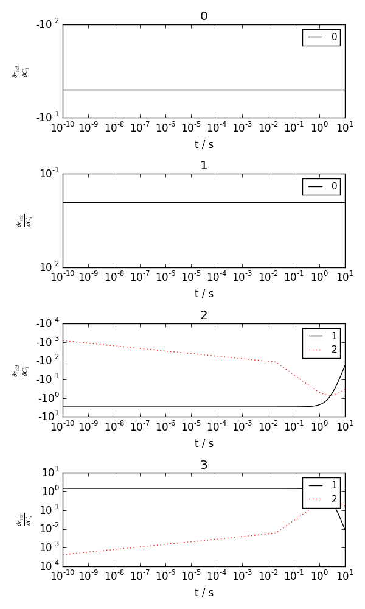
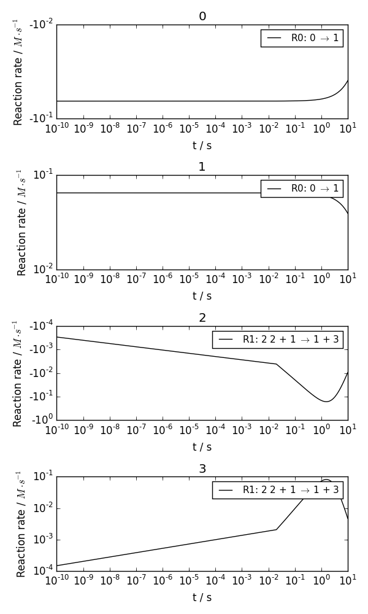

Four species two reactions¶
examples/four_species.py demonstrates how to use the plotting utilities plot_per_reaction_contribution and plot_jacobian. The reaction system is as follows:
\[\begin{split}A &\rightarrow B ~~~ & k_1=0.05 \\
2C + B &\rightarrow D + B ~~~ & k_2=3.0\end{split}\]
$ python four_species.py --help
usage: four_species.py [-h] [-t TEND] [-N N] [-n NT] [-j] [-m MODE] [--logy]
[--logt] [-p] [-s SAVEFIG] [-v] [-g]
Integrates the reaction system defined by
:download:`four_species.json <examples/four_species.json>`
optional arguments:
-h, --help show this help message and exit
-t TEND, --tend TEND 10.0
-N N, --N N 1
-n NT, --nt NT 500
-j, --jac-spy False
-m MODE, --mode MODE -
--logy False
--logt False
-p, --plot False
-s SAVEFIG, --savefig SAVEFIG
'None'
-v, --verbose False
-g, --graph False
Here is an example generated by:
$ python four_species.py --plot --savefig four_species.png
Jacobian:
Per reaction contribution:
- four_species.integrate_rd(tend=10.0, N=1, nt=500, jac_spy=False, mode=None, logy=False, logt=False, plot=False, savefig='None', verbose=False, graph=False)[source]¶
Integrates the reaction system defined by four_species.json